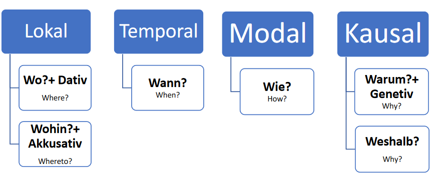

Prepositions – Präpositionen
What is a preposition?
Prepositions are words used before nouns or pronouns such as ‘in’, ‘on’, ‘at’.
They can give us information about time, Place, manner, or a reason
There are different types of prepositions in German...

- Lokal: Präpositionen des Ortes (prepositions of place) We use this type of preposition to answer the question? Wo/ Wohin(where/whereto).
Beispiel:
an(beside), auf(on), hinter(behind), in(in), neben(next to), vor(in front of), unter(under)
Wo? + Dativ: Wo ist das Buch? Das Buch ist auf dem Tisch
(Where is the book? The book is on the table)
Wohin? + Akkusativ: Wohin gehen Sie? Ich gehe in die Schule.
(Where are you going? I am going to school.)
- Temporal: Präpositionen für Zeitangaben (Prepositions for time)
Here it is about time so it answers the question: Wann? (when?)
Beispiel:
gegen(around), in(in), nach(after), seit(since), um(at), von... bis(from...to)
Wann beginnt der Unterricht? Der Unterricht beginnt um 5 Uhr.
(When does the class begin? The class begins at 5 a.m)
Sara arbeitet von Montag bis Freitag.
(Sara works from Monday to Friday.)
- Modal: Präpositionen für die Art und Weise (Prepositions of manner) It answers the question: Wie (how?)
Beispiel:
Mit(with), ohne(without), gegen (against/ around)
Wie fahren Sie nach Berlin? Mit dem Bus fahre ich nach Berlin
(How will you travel to Berlin? I'm going to Berlin by bus)
- Kausal: Präpositionen für Gründe und Ziele. (Prepositions of reason) Here it is about the reason so it answers the question: Warum? Or weshalb? (Why?)
Beispiel:
Aufgrund(because of), bezüglich(regarding), infolge(as a result,), laut(according to), trotz(in spite of), wegen(due to).
Trotz des Wetters arbeiten wir heute
(In spite of the weather, we are working today)